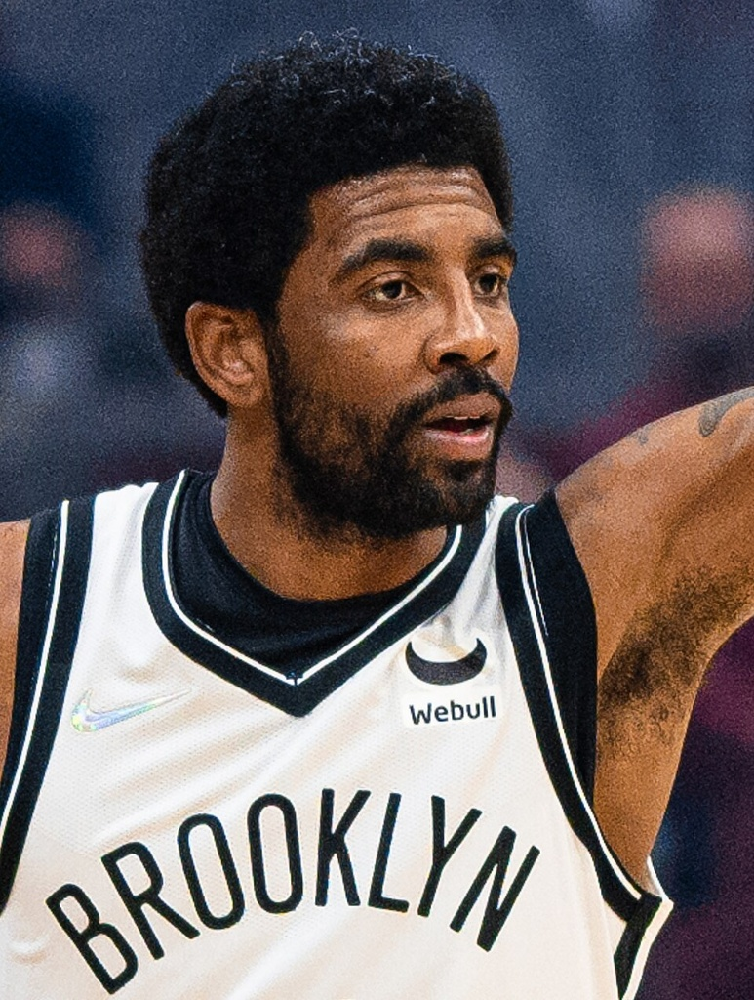
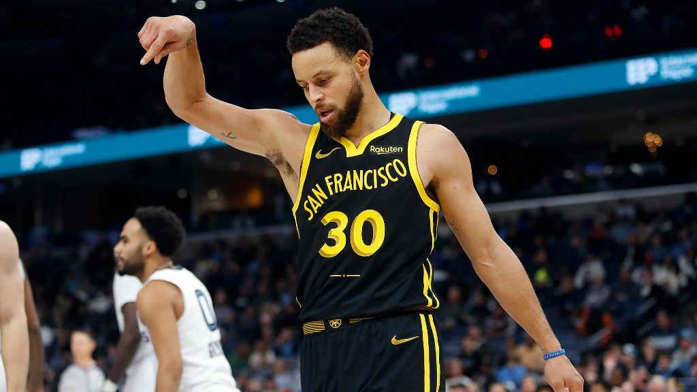
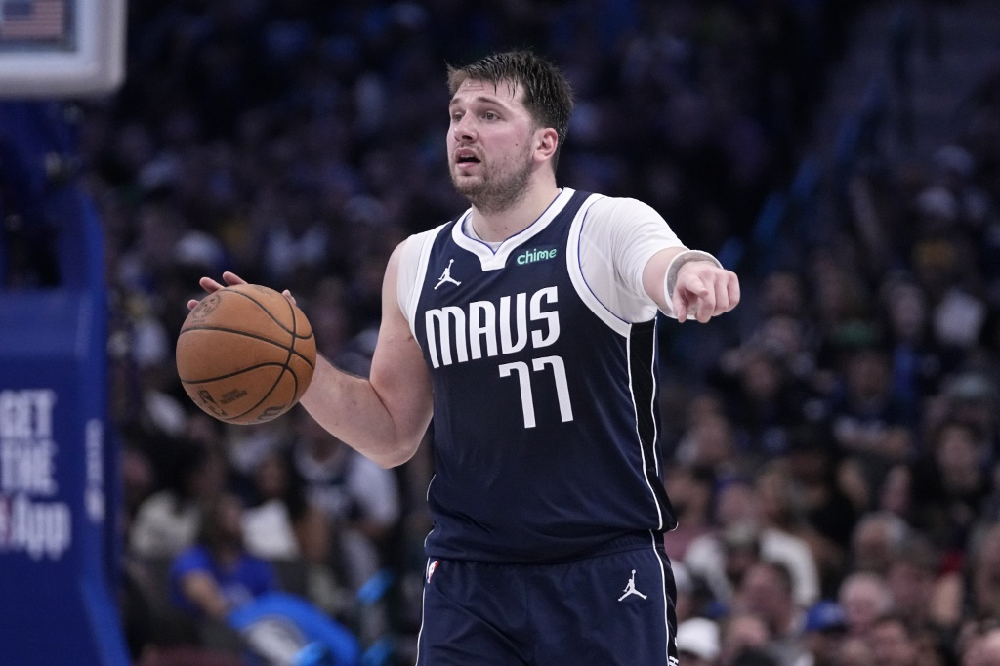
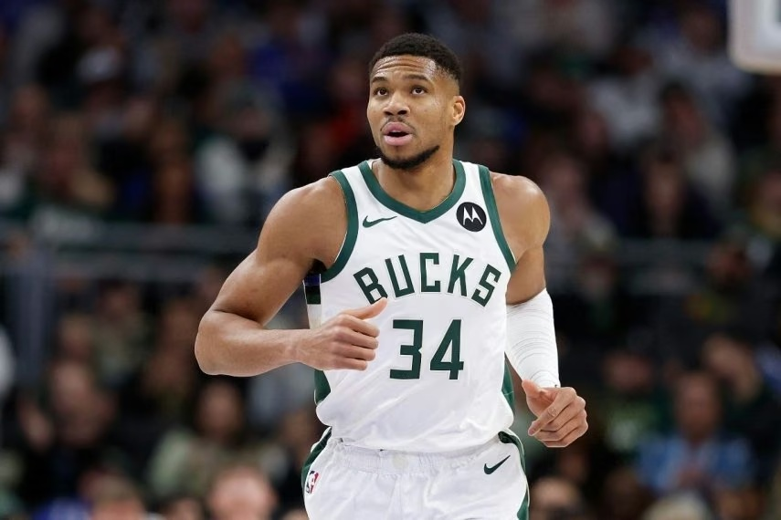
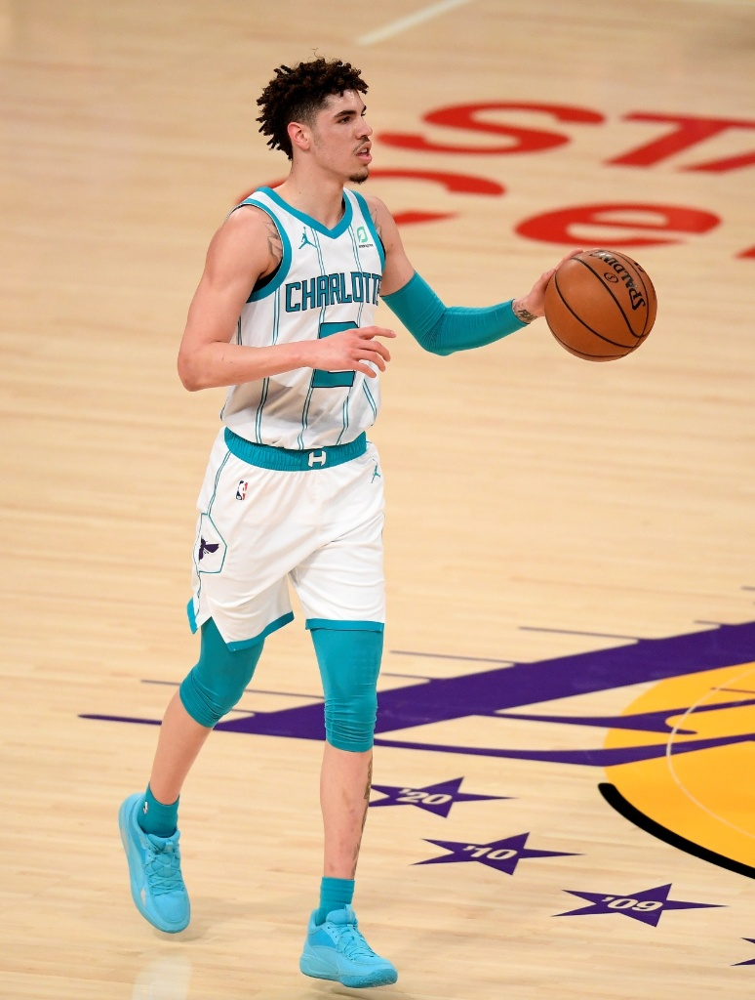
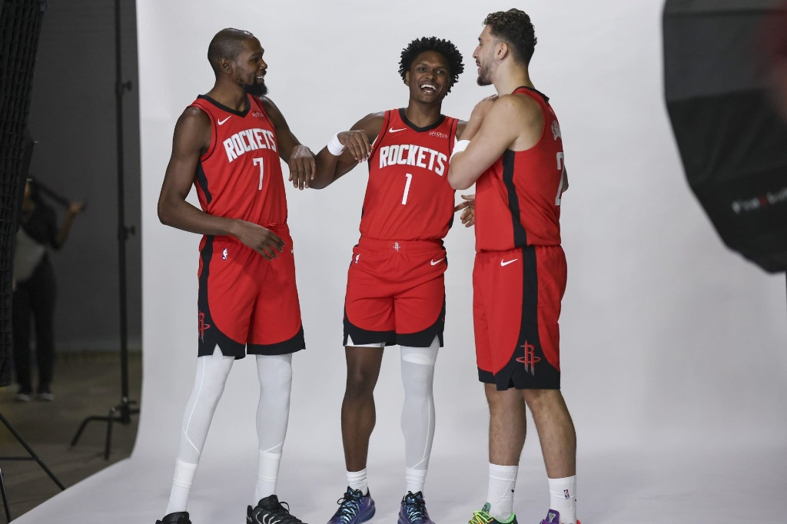

ESTRELLAS DE LA CANCHA.
Coloca el cursor sobre cualquier tarjeta para descubrir el perfil técnico y estadísticas de cada jugador.

[cite: 2]Kyrie Irving
[cite: 2]ESTILO DE JUEGO
Considerado el jugador con el mejor manejo de balón en la historia de la NBA. Capaz de finalizar con ambas manos desde ángulos imposibles.

[cite: 4]Stephen Curry
[cite: 4]ESTILO DE JUEGO
El mejor tirador de todos los tiempos. Revolucionó el básquetbol moderno con su rango ilimitado desde el triple.

[cite: 6]Luka Dončić
[cite: 6]ESTILO DE JUEGO
Genio ofensivo con visión de cancha privilegiada, control total del ritmo de juego y un step-back letal.

[cite: 5]Giannis Antetokounmpo
[cite: 5]ESTILO DE JUEGO
'The Greek Freak'. Fuerza física imparable en transición, dominio absoluto en la pintura y defensor élite.
 [cite: 1]
[cite: 1]
Jaren Jackson Jr.
[cite: 1]ESTILO DE JUEGO
Ancla defensiva y ganador del premio al Mejor Defensor del Año. Combina gran intimidación bajo el aro con tiro exterior.

[cite: 3]LaMelo Ball
[cite: 3]ESTILO DE JUEGO
Creatividad pura en la duela. Especialista en pases espectaculares a cancha completa y triples profundos.

[cite: 7]Roster Houston
[cite: 7]ESTILO DE JUEGO
Combinación explosiva de anotación letal desde media distancia, atletismo puro en el perímetro y versatilidad ofensiva.